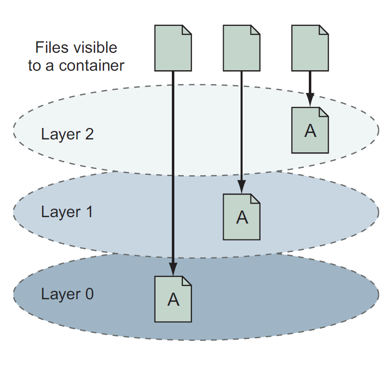
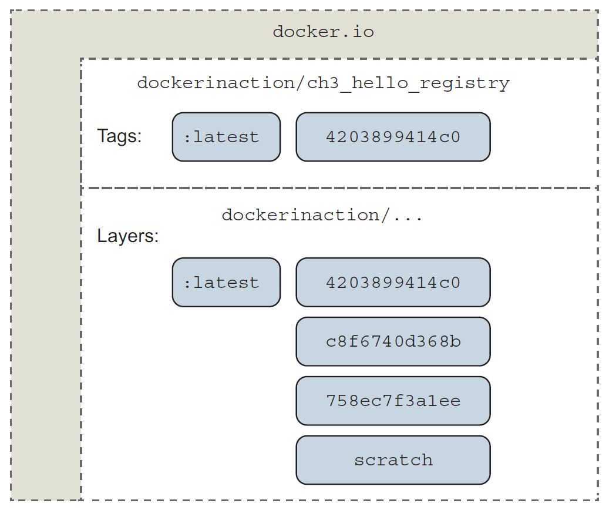
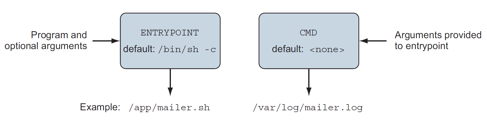
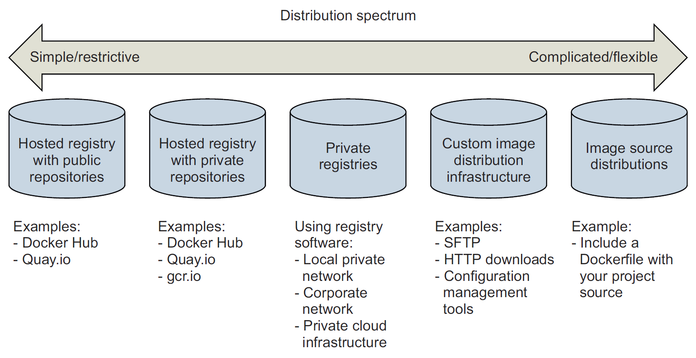
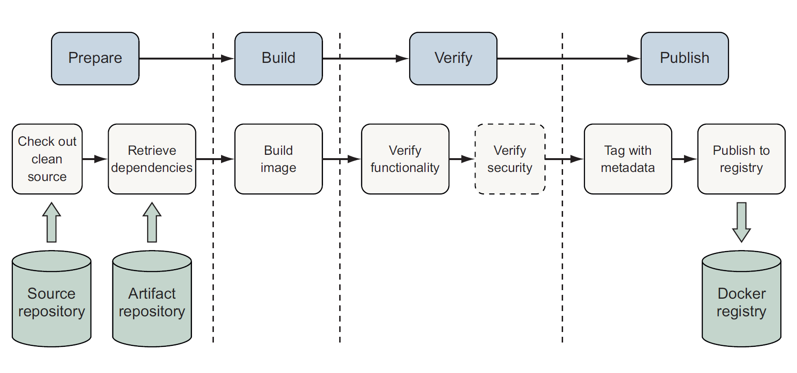
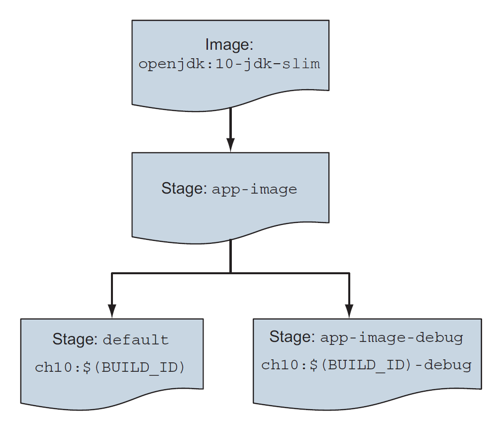
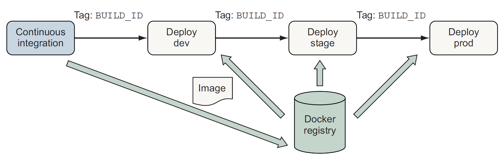
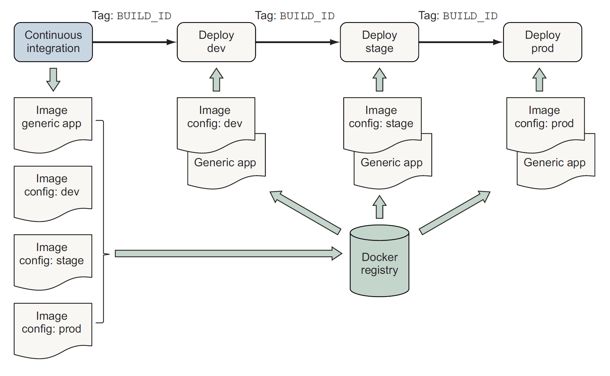

📦 Packaging software for distributionPackaging software in imagesReviewing filesystem changesCommitting a new imageConfiguring image attributesGoing deep on Docker images and layersExploring union filesystemsTagging a local imageManaging image sizeExporting and importing flat filesystemsBuilding images with DockerfilesDockerfile primerMetadata instructionsFilesystem instructionsInjecting downstream build-time behaviorCreating maintainable DockerfilesARGMultistage DockerfileUsing startup scripts and multiprocess containersEnvironmental preconditions validationInitialization processesHealth checksBuilding hardened application imagesPublic and private software distributionChoosing a distribution methodImage pipelinesPatterns for building imagesAll-in-One patternSeparate build and runtime imagesVariations of runtime image via multi-stage buildsRecord metadata at image build timePatterns for tagging imagesContinuous delivery with unique tagsConfiguration image per deployment stageSemantic versioning
The basic workflow for building an image from a container:
x
docker container diff image-devx
docker container commit -a "@dockerinaction" -m "Added git" \image-dev ubuntu-git-a flag signs the image with an author-m flag sets a commit messageThe filesystem snapshot isn't the only thing included with commit. Each layer also includes metadata describing the execution context including:
A union filesystem contains of layers. Each time a change is made, that change is recorded on a new layer on top all of the others. The union or top-down view, is what container (and user) sees when accessing the filesystem.
Reading files that are located on different layers:

The changes made to the filesystem of a container are listed with the docker container diff. It shows a file and action on it: A (add), C (change), D (delete). Changes to filesystem attributes such as file ownership and permissions are recorded same way.
When a file in a read-only layer is modified, the whole file is first copied from the read-only layer into the writable layer before the change is made.
When commit the layer, a new ID is generated for it, it copies all the file changes are saved and some metadata including that generated identifier, parent layer identifier, and the execution context of the container that the layer was created from.
Repositories are location/name pairs that point to a set of specific layer identifiers. Each repository contains at least one tag that points to a specific layer identifier - an image definition:

All layers below the writable layer created for a container are immutable. This property makes it possible to share access to images instead of creating independent copies for every container. It also makes individual layers highly reusable.
By default, if we don't specify any tag it will become latest.
We can examine all the layers in an image using the docker image history.
x
docker tag 0e5574283393 fedora/httpd:version1.0Tagged a local image with such id to "fedora" repository with "version1.0".
We won't be able to decrease container size by deleting some libs because UFS will mark a file as deleted by actually adding a file to the top layer. The original file and any copies that existed in other layers will still be present in the image.
To solve both the size and layer growth problems we use layer system to create branches. If we don't want some lib we just start from some previous image without it and create a new one. To solve the problem of repeating all steps that were made in peer branch we automate image builds with Dockerfiles.
Export to get a flattened copy of a filesystem:
x
docker container create --name export-test \dockerinaction/ch7_packed:latest ./echo For Export
docker container export --output contents.tar export-test
docker container rm export-testtar -tf contents.tarImport:
x
docker import -c "ENTRYPOINT [\"/hello\"]" - \dockerinaction/ch7_static < static_hello.tar
A Dockerfile is a text file that contains instructions for building an image. An example Dockerfile for installing Git on Ubuntu:
x
FROM ubuntu:latestLABEL maintainer="dia@allingeek.com"RUN apt-get update && apt-get install -y gitENTRYPOINT ["git"]Build a new image and tag it with auto:
x
docker image build . --tag ubuntu-git:autoAt each step we create a new container from changed existing one:
x
Sending build context to Docker daemon 2.048kBStep 1/4 : FROM ubuntu:latest---> 452a96d81c30...Step 2/4 : LABEL maintainer="dia@allingeek.com"---> Running in 11140b391074Removing intermediate container 11140b391074...Step 4/4 : ENTRYPOINT ["git"]---> Running in 6151803c388aRemoving intermediate container 6151803c388a---> e397ecfd576cSuccessfully built e397ecfd576cSuccessfully tagged ubuntu-git:autoIf we run those steps again then it will use cache results. For a full rebuild we use --no-cache flag on docker image build.
The first thing to do when starting a new project is to define which files should never be copied into any other images. We set them in .dockerignore file.
x
FROM debian:buster-20190910LABEL maintainer="dia@allingeek.com"RUN groupadd -r -g 2200 example && \ useradd -rM -g example -u 2200 exampleENV APPROOT="/app" \ APP="mailer.sh" \ VERSION="0.6"LABEL base.name="Mailer Archetype" \ base.version="${VERSION}"WORKDIR $APPROOTADD . $APPROOTENTRYPOINT ["/app/mailer.sh"]EXPOSE 33333LABEL - define key/value pairs for additional metadata
ENV - environmental variables
WORKDIR - default working directory; if a location doesn't exist it will create that automatically
EXPOSE - open ports
ENTRYPOINT - has two forms:
ADD - similar to COPY but with 2 differences:
Dockerfile defines 3 instructions that modify the filesystem: COPY, VOLUME, and ADD. An example:
x
FROM dockerinaction/mailer-base:0.6RUN apt-get update && \ apt-get install -y netcatCOPY ["./log-impl", "${APPROOT}"]RUN chmod a+x ${APPROOT}/${APP} && \ chown example:example /var/logUSER example:exampleVOLUME ["/var/log"]CMD ["/var/log/mailer.log"]COPY - copy files from the filesystem where the image is being built, into the build container; takes at least 2 arguments and next ones are source files; Has one unexpected feature: any files copied with file ownership set to root (better to delay RUN instructions to change file ownership until copy all files)
VOLUME - create the defined location in the filesystem and add a volume definition to the image metadata; same as --volume
CMD - list of passed default arguments to the ENTRYPOINT command: 
CMD command can also be overridden within the docker run command, ENTRYPOINT doesn't have such option
Build an image from the directory containing mailer-logging.df:
x
docker image build -t dockerinaction/mailer-logging -f mailer-logging.df .
ONBUILD instruction defines other instructions to execute if the resulting image is used as a base of another build. For example we could use ONBUILD instructions to compile a program that's provided by a downstream layer. The upstream Dockerfile would use a set of instructions after FROM like this:
x
ONBUILD COPY [".", "/var/myapp"]ONBUILD RUN go build /var/myappThe instructions following ONBUILD aren't executed when their containing Dockerfile is built. Instead, those instructions are recorded in the resulting image's metadata.
ARG instruction defines a variable that users can provide to Docker as an argument when building an image. For example it can be useful for the version metadata that goes into the image tag, environment variable, and label metadata:
x
FROM debian:buster-20190910ARG VERSION=unknownLABEL maintainer="dia@allingeek.com"RUN groupadd -r -g 2200 example && \ useradd -rM -g example -u 2200 exampleENV APPROOT="/app" \ APP="mailer.sh" \ VERSION="${VERSION}"LABEL base.name="Mailer Archetype" \ base.version="${VERSION}"WORKDIR $APPROOTADD . $APPROOTENTRYPOINT ["/app/mailer.sh"]EXPOSE 33333Now the version can be defined once as a shell variable and passed on the command line as both the image tag and a build argument for use within the image:
x
version=0.6; docker image build -t dockerinaction/mailer-base:${version} \-f mailer-base.df \--build-arg VERSION=${version} \If we hadn't specified VERSION as a build argument it will use default unknown value.
We can define stages in one Dockerfile, for example builder and runtime. First one gather dependencies and builds the program and the next stage copies the certificate authority and other files into the runtime image execution:
x
################################################## Define a Builder stage and build app inside itFROM golang:1-alpine as builder
# Install CA CertificatesRUN apk update && apk add ca-certificates
# Copy source into BuilderENV HTTP_CLIENT_SRC=$GOPATH/src/dia/http-client/COPY . $HTTP_CLIENT_SRCWORKDIR $HTTP_CLIENT_SRC
# Build HTTP ClientRUN CGO_ENABLED=0 GOOS=linux GOARCH=amd64 \ go build -v -o /go/bin/http-client ################################################## Define a stage to build a runtime image.FROM scratch as runtimeENV PATH="/bin"# Copy CA certificates and application binary from builder stageCOPY --from=builder \ /etc/ssl/certs/ca-certificates.crt /etc/ssl/certs/ca-certificates.crtCOPY --from=builder /go/bin/http-client /http-clientENTRYPOINT ["/http-client"]Defined a stage with as builder which also allows for easy referencing to filesystem.
Docker containers have no control over the environment where they're created but they have control of their execution. An image author may introduce environment and dependency validation prior to execution of the main task. At the startup we should validate as much context as possible, including the following:
We may use shell script at container startup:
x
#!/bin/bashset -eif [ -n "$WEB_PORT_80_TCP" ]; then if [ -z "$WEB_HOST" ]; then WEB_HOST='web' else echo >&2 '[WARN]: Linked container, "web" overridden by $WEB_HOST.' echo >&2 "===> Connecting to WEB_HOST ($WEB_HOST)" fifiif [ -z "$WEB_HOST" ]; then echo >&2 '[ERROR]: specify container to link; "web" or WEB_HOST env var' exit 1fiexec "$@" # run the default commandUsing an init process is the best way to launch multiple programs, clean up orphaned processes, automatically restart any failed processes. Init processes typically use a file. We may use a startup script for the runit program.
Docker provides an --init option to run an init process inside the container. Docker uses tini program as an init process by default.
Two ways to specify the health check command:
x
FROM nginx:1.13-alpineHEALTHCHECK --interval=5s --retries=2 \ CMD nc -vz -w 2 localhost 80 || exit 1 #it means "or exit 1"The command exit status is used to determine the container's health. Options:
Checks run frequently and to find containers health run docker ps command.
Health check facility also supports options for the following:
--health-cmd to provide health checks at container runtime.
Hardening an image is the process of shaping it in a way that will reduce the attack surface inside any Docker containers based on it. A general strategy for hardening is to minimize the software included with it to reduce vulnerabilities. Besides that you can do following:
setuid or setgid attributes set

CI process for a Docker image:

x
FROM maven:3.6-jdk-11ENV WORKDIR=/projectRUN mkdir -p ${WORKDIR}COPY . ${WORKDIR}WORKDIR ${WORKDIR}RUN mvn -f pom.xml clean verifyRUN cp ${WORKDIR}/target/ch10-0.1.0.jar /app.jarENTRYPOINT ["java","-jar","/app.jar"]And build the project:
x
docker image build -t dockerinaction/ch10:all-in-one \ --file all-in-one.df .Run maven container to build an application artifact:
x
docker container run -it --rm \-v "$(pwd)":/project/ \-w /project/ \maven:3.6-jdk-11 \mvn clean verifyDockerfile for building the runtime image:
x
FROM openjdk:11-jdk-slimCOPY target/ch10-0.1.0.jar /app.jarENTRYPOINT ["java","-jar","/app.jar"]Build and run:
x
docker image build -t dockerinaction/ch10:simple-runtime \--file simple-runtime.df
docker container run --rm -it -p 8080:8080 dockerinaction/ch10:simple-runtimeSometimes it's useful to create small variations of an application image to support use cases such as debugging, specialized testing or profiling.
Multi-stage build example:

Should use labels to capture at least the following data:
The Docker community Label Schema has defined commonly used labels.
Multiple tags may point to a single image ID and tags are mutable and may be moved between images or removed. There are common tagging and deployment schemes.
Pipelines promote a single image with a unique tag through delivery stages:

Pipelines produce environment-specific artifacts and promote them through stages:

We create two kinds of images:
At deployment, the application container is created from the generic application image, and that container mounts the config container's filesystem as a volume.
Tag and publish images with a Major.Minor.Patch scheme that communicates the level of change in a release. It helps both publishers and consumers manage expectations for the kind of changes a consumer is getting when updating an image dependency.